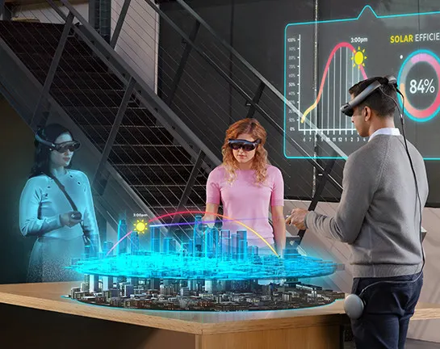

REALIDAD MIXTA

¿Que es la realidad mixta?
En el contexto de la REALIDAD VIRTUAL, la realidad mixta se refiere a la capacidad
de los dispositivos inmersivos(como el Meta Quest 3) de combinar el entorno fisico
del usuario con elementos digitales permitiendo la INTERACCIÓN EN TIEMPO REAL.